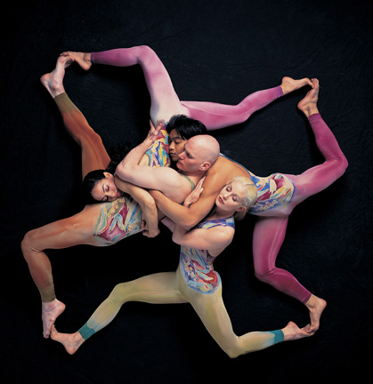
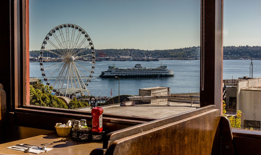

Work Experience

Theatre Based
Pilobolus Dance Theatre: Lighting Supervisor
- 2016-2017 2019-2020
- Travel with tour cast and crew, direct local and tour crew to load in, focus, and operate lighting during performance. Direct local and tour crew during load out post performance.
University of the Art; Lighting Technician/lead
- 2016-2019
- Direct local and tour crew for load in, focus, and load out of lighting equipment.
PNTA; Event Specialist
- 2015-2016
- Manage all rentals ingoing and outgoing, Determine with clients equipment needs and solutions for each space. Perform Site visits with Clients. Draft Plans for Events, Co-ordinate with Warehouse to form pick-sheets for events and rentals. Onsite lead for events. Putting quotes together for rental/event needs and negotiating with clients.

Service Based
Lowell's Restaurant
- 2017-2018
- Run nine table service section in Restaurant. Bus tables, take orders, seat guests, communicate with host and bartenders for service.
Western Washington University Catering
- 2014-2015
- Travel to and from catering location, prepare dining and kitchen areas. Serve food/drinks to guest at event or dining service
Subway Sandwich Artist
- 2013-2015
- Maintain a safe and clean environment. Prepare food for line, build and serve sandwiches.
Panda Express Prep Cook
- 2013-2015
- Prepare all veggies/sauces for the day. Maintain a clean kitchen environment. Work in conjunction with university kitchen. Serve on the line if the morning is busy, finish veggies after that.